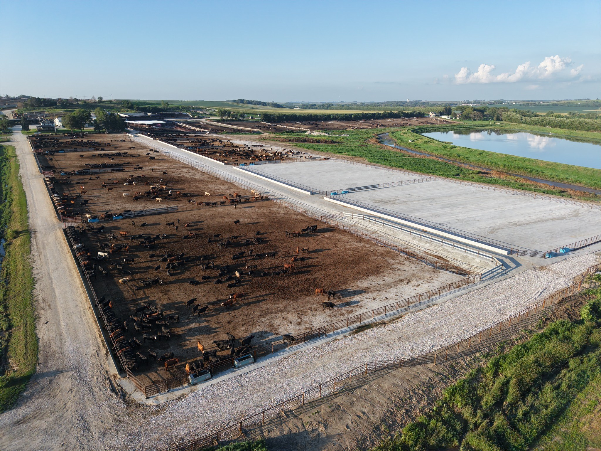

RCC Site Paving in Carrington, ND
Carrington is in an agricultural corridor where grain receiving, storage and processing can shape how facilities use their yards. An RCC plan should account for delivery flow as well as the equipment and service routes around it.
Request an Estimate →Keep grain flow and service routes connected
At a grain or agribusiness property, pavement connects receiving points, conveyors, storage areas, truck staging and maintenance access. Drawing those movements before construction helps identify conflicts, drainage needs and opportunities for phased work.
- FeedlotFeedlot pavement planning should connect feed delivery, cattle movement, equipment turning, cleanout and water management.
- Grain StorageFor grain storage, show receiving and reclaim routes, conveyor locations, truck staging and any planned changes to storage capacity.
- Commercial & IndustrialAgribusiness yards may combine loading, service, employee and heavy-equipment traffic; map each route before defining pavement areas.
- MunicipalMunicipal pavement evaluation should include public access, utility coordination, drainage, tie-in details and the required project specifications.

Lay out receiving, staging and future access
Carrington-area operators can use a site plan to mark harvest queues, turning movements, equipment storage, utility corridors and locations where future expansion may connect. This is useful context for comparing pavement limits and transitions.
RCC is not a one-size-fits-all section. Subgrade, base, traffic, mixture and construction sequencing should be evaluated for the specific facility and its operating schedule.
Request a Quote →